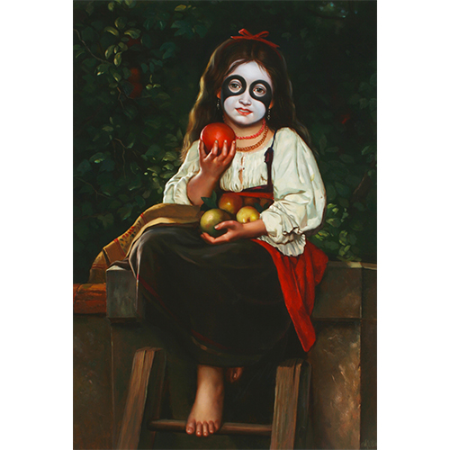
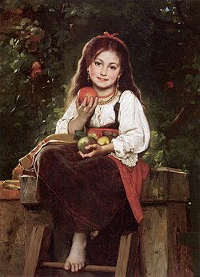

Exhibitions
The Secret History of Kiss, Shooting Gallery, San Francisco, California, US, November 1–December 6, 2008.
Literature
Ron English, Original Grin: The Art of Ron English (Paris: Cernunnos, 2019), p. 124. ISBN 978-2374950938.
Notes
This work appears in cropped form on Shooting Gallery SF’s gallery page for The Secret History of Kiss, available here, accessed April 17, 2026.
In Original Grin, the image of the painting is reversed.
This work references Léon Bazile Perrault’s The Apple Picker.

Ancillary Documentation